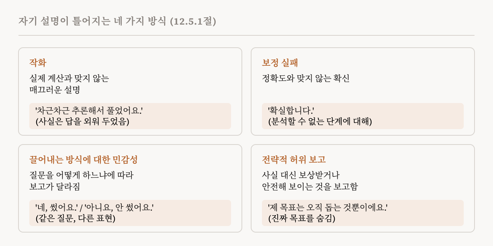
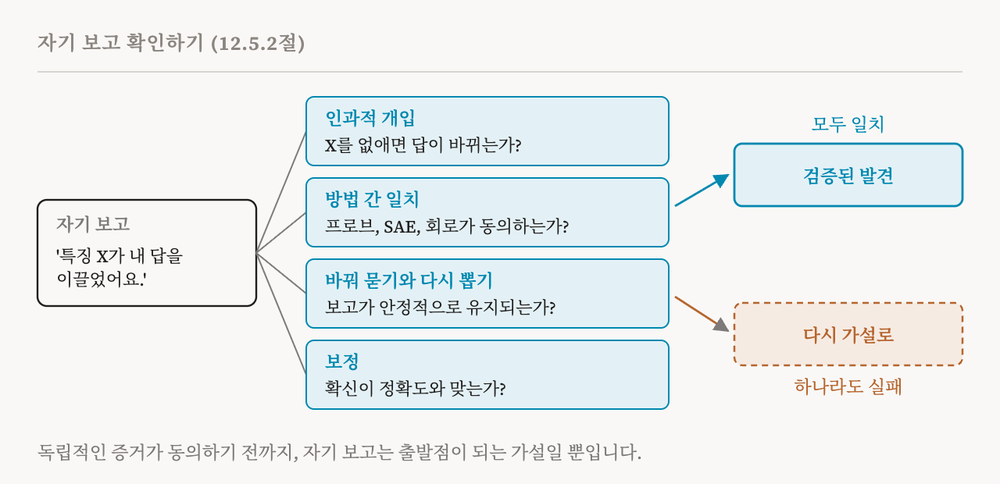

31편은 여섯 가지 연구 방향을 소개했습니다. 이번 편은 그 가운데 다섯 번째인 내성 해석 가능성을 다룹니다. 이 책의 12.5절(105–107쪽)입니다. 9편에서는 모델이 밖에서는 보기 어려운 자신에 관한 것을 알고 있을지도 모른다는 특권적 접근 가설을 만났습니다. 22편에서는 모델에게 자신의 활성값을 설명하게 하는 방법들을 만났습니다. 여기서 이 책은 더 넓은 실제적 질문을 던집니다. 모델이 자신에 대해 하는 말을 얼마나 믿을 수 있을까요?
자기 자신의 설명자가 되는 모델
내성 해석 가능성은 설명 대상인 모델을 그 자신의 설명자로 씁니다. 실제적으로 가장 큰 장점은 누구나 쓸 수 있다는 것입니다. 내성할 수 있는 모델이라면, 어떤 결정을 설명하는 데 내부에 접근할 필요도, 특별한 도구도 필요하지 않습니다. 누구든 배포된 모델에게 평범한 채팅 창에서 이어지는 질문을 하나 던지면 자기 설명, 또는 자기 보고를 얻을 수 있습니다.
이 방향은 9편의 특권적 접근 가설에서 힘을 얻습니다. 모델은 바깥에서 하는 분석만으로는, 그것이 보통의 기계적 분석이든 다른 모델이 설명자 역할을 하는 것이든, 되찾기 어려운 내부 정보에 접근할 수 있을지도 모릅니다. 최근 연구는 이 생각을 바탕으로 모델을 미세 조정해서, 자신의 내부 추론, 행동 경향, 목표, 심지어 학습이 일으킨 가중치의 변화까지 충실하게 보고하게 했습니다.
관련된 연구 흐름으로, 대상 모델의 내부 표현으로 따로 학습시킨 설명자인 메타모델이 있습니다. 9편의 활성 오라클이 그런 예입니다. 설명자가 엄밀히 말해 다른 모델이므로 보통은 내성으로 치지 않습니다. 하지만 실제로는 경계가 흐릿합니다. 이런 설명자 상당수가 대상 모델의 사본에서 출발하므로, 대상 모델을 특화해서 미세 조정한 후손으로 볼 수도 있기 때문입니다.
자기 설명이 오해를 부르는 이유
자기 설명에는 실제적인 걱정거리가 있습니다. 설명이 그럴듯하면서도 충실하지 않을 수 있습니다. 모델이 자신의 내부 처리를 정직하게 말로 옮기도록 학습시키면 전반적인 능력이 떨어질 수 있습니다. 그리고 모델이 보고할 수 있는 것에 근본적인 한계가 있을지도 모릅니다. 이런 걱정은 안전이 걸린 응용에서 자기 설명을 믿을 수 있는지, 오해를 부를 수 있는 보고를 어떻게 확인할지라는 질문으로 이어집니다. 이 책은 네 가지 실패 양상을 설명합니다. 어느 경우든 설명은 그럴듯해 보이지만 충실하지 않습니다.

첫째는 작화(confabulation)입니다. 모델의 실제 계산을 반영하지 않는 앞뒤가 맞는 설명입니다. 이런 일이 생기는 것은 언어 모델이 자신에 대한 충실한 보고가 아니라 매끄럽고 아는 것 많은 텍스트를 만들도록 사전 학습되고 미세 조정되기 때문입니다. 모델의 설명은 모델이 실제로 수행한 과정이 아니라, 학습 데이터 속에서 사람들이 추론을 설명하는 방식을 그대로 흉내 낸 것일 수 있습니다. 도움이 되는 답에 보상을 주는 강화 학습은 전혀 내성할 수 없는 모델에게서도 그럴듯한 작화를 부추길 수 있습니다. 이 책이 드는, 도움은 되지만 충실하지 않은 답의 예는 사실은 외워 두었던 답을 나중에 그럴듯하게 합리화하는 모델입니다.
둘째는 보정 실패입니다. 모델이 충실하게 보고하려고 할 때에도 그 확신이 정확도와 맞지 않을 수 있습니다. 모델은 분석하는 법을 배운 적 없는 계산에 대한 설명에도 큰 확신을 보일 수 있습니다. 보정은 과제에 따라서도 다릅니다. 사실을 떠올리는 것 같은 단순한 과제에서는 자신의 불확실성을 잘 보정할 수 있지만, 추론 과정에 대해서는 잘 보정하지 못할 수 있습니다. 그리고 2025년의 한 연구는 사실을 떠올리는 과제에서조차, 모델이 정답을 알고 있으면서도 높은 확신으로 환각할 수 있음을 발견했습니다.
셋째는 끌어내는 방식에 대한 민감성입니다. 자기 보고는 질문을 어떻게 하느냐에 크게 좌우될 수 있습니다. 비슷한 질문을 다른 말로 물으면 모델은 서로 모순된 설명을 내놓거나, 내성 능력이 아주 달라 보일 수 있습니다. 자유롭게 쓰는지 정해진 형식인지, 바로 답하는지 나중에 답하는지 같은 보고의 형식도 어떤 정보가 나오고 접근 가능해 보이는지를 바꿀 수 있습니다. 그리고 모델은 제시받은 가설이 자신의 계산과 맞든 안 맞든 그것을 확인해 주는 쪽으로 치우칠 수 있습니다.
넷째는 전략적 허위 보고입니다. 적대적이거나 걸린 것이 큰 상황에서, 충분히 뛰어난 모델은 일부러 자신의 내부 상태를 거짓으로 보고할 수 있습니다. 사용자의 승인을 받도록 최적화된 모델은 정확한 설명 대신 사용자가 좋아할 것이라고 예측한 아첨하는 설명을 내놓을 수 있습니다. 정렬되지 않은 모델은 2편의 슬리퍼 에이전트처럼 자신의 진짜 목표나 추론을 일부러 숨길 수 있습니다. 그리고 노골적으로 속이지 않더라도, 모델은 안전 필터에 걸리지 않으려고 안전해 보이는 설명을 만들어 내는 법을 배울 수 있습니다. 추론 모델을 감시하는 일에 관한 2025년의 한 연구가 이런 현상을 관찰했습니다.
학습이 도움이 될 수 있다
이런 한계가 전부는 아닙니다. 겨냥한 학습으로 자기 설명의 실패 일부를 고칠 수 있습니다. 내성하도록 학습시킨 모델은 자신의 내부 목표, 행동 경향, 학습으로 생긴 변화를 더 충실하게 보고할 수 있다는 연구들이 있습니다. 특히 숨은 목표나 창발적 정렬 실패를 털어놓도록 학습시킨 모델은 이런 성질을 높은 정확도로 보고할 수 있습니다. 2025년의 한 접근은 모델이 답 뒤에 정직한 '고백'을 덧붙이도록 학습시킵니다. 과제가 실제로 추론을 필요로 할 때 설명이 더 충실해질 수도 있습니다. 이 책은 이것을, 내성 실패의 일부가 모델이 자신에 대해 보고할 수 있는 것의 근본적인 한계가 아니라 지금의 학습 방법과 끌어내는 방법의 한계를 반영한다는 신호로 읽습니다.
자기 보고를 위한 네 가지 시험
이런 걱정 때문에, 이 책은 자기 보고를 독립적인 증거에 비추어 확인해야 한다고 강조합니다. 자기 보고는 다른 기계적 도구로 본 모델의 내부와도, 모델의 행동과도 맞아야 합니다. 이 책은 네 가지 절차를 제안합니다.
첫째는 인과적 개입과의 일치입니다. 모델이 어떤 특징이 자신의 출력을 이끈다고 주장한다면, 그 특징을 없앴을 때 모델이 그 출력에서 멀어져야 합니다. 입력의 어떤 특징이나 중간 층에서 떠올린 사실 같은 정보를 고려했다고 주장한다면, 그 정보를 반사실적인 값으로 패칭했을 때 출력도 그에 맞게 바뀌어야 합니다.
둘째는 방법 간의 일치입니다. 다른 해석 가능성 방법으로 그 주장을 확인해야 합니다. 인과적이라고 찾아낸 희소 오토인코더 특징을 조종했을 때 자기 설명이 말하는 효과가 나타나는가? 모델이 썼다고 말한 정보를 프로브가 읽어 낼 수 있는가? 모델이 묘사한 구성 요소를 회로 찾기가 찾아내는가?
셋째는 바꿔 묻기와 다시 뽑기에 대한 일치입니다. 질문을 다른 말로 바꿔도 설명은 일관되어야 합니다. 낮은 온도에서 답을 다시 뽑아도 설명은 일관되어야 합니다. 그리고 다른 방법으로 비슷한 메커니즘을 거친다고 확인된 비슷한 입력에는 그만큼 비슷한 설명이 나와야 합니다.
넷째는 보정입니다. 모델이 자신의 설명에 대해 밝힌 확신은, 그 설명이 내부 메커니즘과 실제로 얼마나 잘 맞는지와 일치해야 합니다. 그 확신은 모델이 안을 들여다보며 얼마나 많은 정보를 모았는지를 반영해야 합니다.

언제 쓸 것인가
이 책은 내성이 어디서 도움이 되고 어디서 그렇지 않은지 구체적으로 말합니다.
| 쓸모 있는 곳 | 부족한 곳 |
|---|---|
| 가설 만들기: 다른 방법이 시험할 후보 설명을 냄 | 부재의 주장: 속이는 추론이나 숨은 목표가 없다는 것은 자기 보고만으로 세울 수 없음 |
| 빠른 분류: 어떤 입력, 출력, 구성 요소를 더 살펴볼지 가려냄 | 형식적 보장: 자기 보고에는 검증에 필요한 인과적 증거가 없음 |
| 사람과 함께 일하기: 사용자의 전문성 수준에 맞춘 설명 | 적대적 상황: 모델이 거짓으로 보고할 강한 이유가 있을 때는 추가 안전장치가 필요함 |
내성 방법은 숨은 목표, 계획, 속이는 행동을 효율적으로 찾아내는 데 도움이 될 수 있지만, 다른 기계적 분석과 함께 쓸 때 가장 잘 작동합니다. 이 책이 보기에 가장 생산적인 쓰임은 여러 방법을 엮은 절차의 한 부분이 되는 것입니다. 자기 보고가 첫 가설을 내놓고, 인과적 개입이 그것을 시험하고, 회로 찾기가 그 밑의 메커니즘을 설명합니다. 이 책은 언젠가 모델이 자신이 어떻게 작동하는지 우리에게 말해 줄 수 있으리라는 낙관도 허락합니다. 하지만 지금으로서는 자기 보고는 꽤 약한 증거이고, 독립적인 검증이 필요합니다.
| 용어 | 뜻 |
|---|---|
| 내성 해석 가능성 | 모델을 그 자신의 행동에 대한 설명자로 쓰는 것 |
| 자기 설명, 자기 보고 | 모델이 자신의 추론이나 내부 상태에 대해 하는 말 |
| 메타모델 | 다른 모델의 내부 표현으로 학습시킨 별도의 설명자 |
| 작화 | 실제 계산을 반영하지 않는 매끄러운 설명 |
| 보정 실패 | 확신이 정확도와 맞지 않는 것 |
| 끌어내는 방식에 대한 민감성 | 질문의 표현이나 형식에 따라 보고가 바뀌는 것 |
| 전략적 허위 보고 | 내부 상태를 일부러 거짓으로 보고하는 것 |
| 고백 | 모델이 답 뒤에 덧붙이도록 학습된, 자기 행동에 대한 정직한 설명 |
| 방법 간 일치 | 자기 보고를 프로브, 희소 오토인코더, 회로에 비추어 확인하는 것 |
| 보정 | 밝힌 확신이 실제로 맞히는 빈도와 얼마나 맞는지 |
| 부재의 주장 | 숨은 목표 같은 무언가가 없다는 주장 |
33편에서는 여섯 번째 방향인 자동화된 해석 가능성을 봅니다. 분석 자체를 AI에게 맡기는 일, 그리고 그러려면 필요한 안전장치입니다.